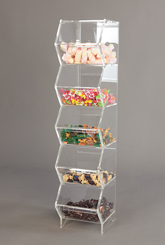
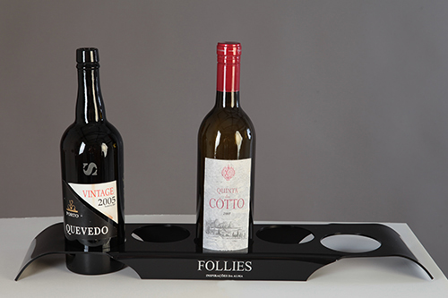
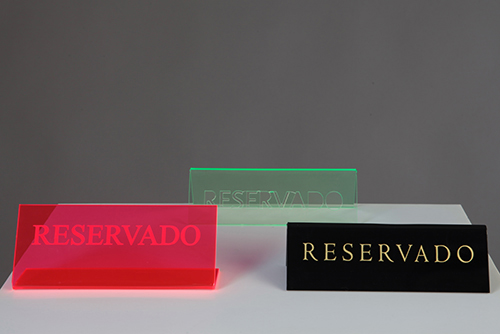
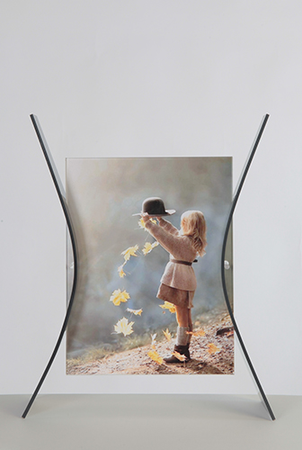
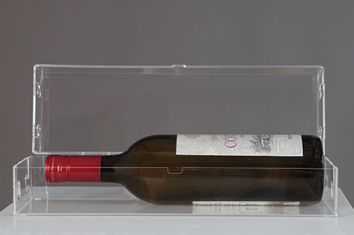

Exposição comercial
Expositor de chás
Compartimentos transparentes para apresentar embalagens, com o produto visível de frente.
Falar sobre esta aplicaçãoAPLICAÇÕES / POR UTILIZAÇÃO
Peças do portefólio da Luzplana, organizadas pelo que permitem apresentar.
8 exemplos apresentados
Exposição comercial
Compartimentos transparentes para apresentar embalagens, com o produto visível de frente.
Falar sobre esta aplicação
Exposição comercial
Vários compartimentos transparentes sobrepostos num conjunto vertical.
Falar sobre esta aplicação
Exposição comercial
Uma base recortada que organiza garrafas numa apresentação horizontal.
Falar sobre esta aplicação
Informação & sinalética
Uma peça de apoio à apresentação de folhetos e informação num balcão.
Falar sobre esta aplicação
Informação & sinalética
Placas de mesa em diferentes cores, com a mensagem visível numa face.
Falar sobre esta aplicação
Informação & sinalética
Um desenho gravado numa superfície transparente, com pormenores em linha.
Falar sobre esta aplicação
Caixas & molduras
Uma fotografia enquadrada entre elementos transparentes e apoios laterais.
Falar sobre esta aplicação
Caixas & molduras
Uma caixa transparente que envolve uma garrafa colocada na horizontal.
Falar sobre esta aplicaçãoImagens publicadas no portefólio oficial. Exemplos de aplicação, sem indicação de disponibilidade, medidas ou preço. A solução adequada ao seu caso deve ser confirmada com a Luzplana.
DA APLICAÇÃO À PEÇA
Uma referência, um desenho ou o espaço onde a peça vai ficar. É por aí que começa a conversa.
Conversar com a Luzplana